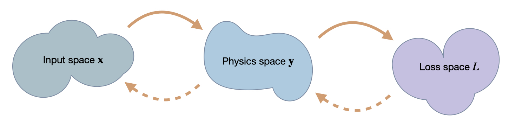

10a: Simple Example comparing Different Optimizers#
Exercise:  Solution:
Solution: 
Problem formulation#
We’ll consider a very simple setup to clearly illustrate what’s happening: we have a two-dimensional input space \(\mathbf{x}\), a mock “physical model” likewise with two dimensions \(\mathbf{y}\), and a scalar loss \(L\), i.e. \(\mathbf{x} \in \mathbb{R}^2\), \(\mathbf{y}: \mathbb{R}^2 \rightarrow \mathbb{R}^2 \), and \(L: \mathbb{R}^2 \rightarrow \mathbb{R} \). The components of a vector like \(\mathbf{x}\) are denoted with \(x_i\), and to be in sync with python arrays the indices start at 0.
Specifically, we’ll use the following \(\mathbf{y}\) and \(L\):
\(\quad \mathbf{y}(\mathbf{x}) = \mathbf{y}(x_0,x_1) = \begin{bmatrix} x_0 \\ x_1^2 \end{bmatrix}\),
i.e. \(\mathbf{y}\) only squares the second component of its input, and \(L(\mathbf{y}) = |\mathbf{y}|^2 = y_0^2 + y_1^2 \ \) represents a simple squared \(L^2\) loss. As starting point for some example optimizations we’ll use \(\mathbf{x} = \begin{bmatrix} 3 \\ 3 \end{bmatrix}\) as initial guess for solving the following simple minimization problem: \(\text{arg min}_{\mathbf{x}} \ L(\mathbf{x}).\)
For us as humans it’s quite obvious that \([0 \ 0]^T\) is the right answer, but let’s see how quickly the different optimization algorithms discussed in the previous section can find that solution. And while \(\mathbf{y}\) is a very simple function, it is nonlinear due to its \(x_1^2\).
3 Spaces#
In order to understand the following examples, it’s important to keep in mind that we’re dealing with mappings between the three spaces we’ve introduced here: \(\mathbf{x}\), \(\mathbf{y}\) and \(L\). A regular forward pass maps an \(\mathbf{x}\) via \(\mathbf{y}\) to \(L\), while for the optimization we’ll need to associate values and changes in \(L\) with positions in \(\mathbf{x}\). While doing this, it will be interesting how this influences the positions in \(\mathbf{y}\) that develop while searching for the right position in \(\mathbf{x}\).

We’re targeting inverse problems to retrieve an entry in \(\mathbf x\) from a loss computed in terms of output from a physics simulator \(\mathbf y\). Hence in a forward pass, we transform from \(\mathbf x\) to \(\mathbf y\), and then compute a loss \(L\). The backwards pass transforms back to \(\mathbf x\). Thus, the accuracy in terms of \(\mathbf x\) is the most crucial one, but we can likewise track progress of an optimization in terms of \(\mathbf y\) and \(L\).
Implementation#
For this example we’ll use the JAX framework, which represents a nice alternative for efficiently working with differentiable functions.
JAX also has a nice numpy wrapper that implements most of numpy’s functions. Below we’ll use this wrapper as np, and the original numpy as onp.
import jax
import jax.numpy as np
import numpy as onp
We’ll start by defining the \(\mathbf{y}\) and \(L\) functions, together with a single composite function fun which calls L and y. Having a single native python function is necessary for many of the JAX operations.
# "physics" function y
# simple L2 loss
# composite function with L & y , evaluating the loss for x
x = np.asarray([3,3], dtype=np.float32)
print("Starting point x = "+format(x) +"\n")
print("Some test calls of the functions we defined so far, from top to bottom, y, manual L(y), L(y):")
physics_y(x) , loss_y( physics_y(x) ), loss_x(x)
Starting point x = [3. 3.]
Some test calls of the functions we defined so far, from top to bottom, y, manual L(y), L(y):
(DeviceArray([3., 9.], dtype=float32),
DeviceArray(90., dtype=float32),
DeviceArray(90., dtype=float32))
Now we can evaluate the derivatives of our function via jax.grad. E.g., jax.grad(loss_y)(physics_y(x)) evaluates the Jacobian \(\partial L / \partial \mathbf{y}\). The cell below evaluates this and a few variants, together with a sanity check for the inverse of the Jacobian of \(\mathbf{y}\):
# this works:
print("Jacobian L(y): " + format(jax.grad(loss_y)(physics_y(x))) +"\n")
# the following would give an error as y (and hence physics_y) is not scalar
#jax.grad(physics_y)(x)
# computing the jacobian of y is a valid operation:
print( "Jacobian y(x): \n" + format(J) )
# the code below also gives error, JAX grad needs a single function object
#jax.grad( loss_y(physics_y) )(x)
print( "\nSanity check with inverse Jacobian of y, this should give x again: " + format(np.linalg.solve(J, np.matmul(J,x) )) +"\n")
# instead use composite 'fun' from above
print("Gradient for full L(x): " + format( jax.grad(loss_x)(x) ) +"\n")
Jacobian L(y): [ 6. 18.]
Jacobian y(x):
[[1. 0.]
[0. 6.]]
Sanity check with inverse Jacobian of y, this should give x again: [3. 3.]
Gradient for full L(x): [ 6. 108.]
The last line is worth a closer look: here we print the gradient \(\partial L / \partial \mathbf{x}\) at our initial position. And while we know that we should just move diagonally towards the origin (with the zero vector being the minimizer), this gradient is not very diagonal - it has a strongly dominant component along \(x_1\) with an entry of 108.
Let’s see how the different methods cope with this situation. We’ll compare
the first order method gradient descent (i.e., regular, non-stochastic, “steepest gradient descent”),
Newton’s method as a representative of the second order methods,
and scale-invariant updates from inverse simulators.
Gradient descent#
For gradient descent, the simple gradient based update from equation (2) in our setting gives the following update step in \(\mathbf{x}\):
where \(\eta\) denotes the step size parameter .
Let’s start the optimization via gradient descent at \(x=[3,3]\), and update our solution ten times with \(\eta = 0.01\):
x = np.asarray([3.,3.])
eta = 0.01
historyGD = [x]; updatesGD = []
for i in range(10):
GD iter 0: [2.94 1.9200001]
GD iter 1: [2.8812 1.6368846]
GD iter 2: [2.823576 1.4614503]
GD iter 3: [2.7671044 1.3365935]
GD iter 4: [2.7117622 1.2410815]
GD iter 5: [2.657527 1.1646168]
GD iter 6: [2.6043763 1.1014326]
GD iter 7: [2.5522888 1.0479842]
GD iter 8: [2.501243 1.0019454]
GD iter 9: [2.4512184 0.96171147]
Here we’ve already printed the resulting positions in \(\mathbf{x}\), and they seem to be going down, i.e. moving in the right direction. The last point, \([2.451 \ 0.962]\) still has a fair distance of 2.63 to the origin.
Let’s take a look at the progression over the course of the iterations (the evolution was stored in the history list above). The blue points denote the positions in \(\mathbf{x}\) from the GD iterations, with the target at the origin shown with a thin black cross.
import matplotlib.pyplot as plt
axes = plt.figure(figsize=(4, 4), dpi=100).gca()
historyGD = onp.asarray(historyGD)
updatesGD = onp.asarray(updatesGD) # for later
axes.scatter(historyGD[:,0], historyGD[:,1], lw=0.5, color='#1F77B4', label='GD')
axes.scatter([0], [0], lw=0.25, color='black', marker='x') # target at 0,0
axes.set_xlabel('x0'); axes.set_ylabel('x1'); axes.legend()
<matplotlib.legend.Legend at 0x7fc742a69430>
No surprise here: the initial step mostly moves downwards along \(x_1\) (in top right corner), and the updates afterwards curve towards the origin. But they don’t get very far. It’s still quite a distance to the solution in the bottom left corner.
Newton#
For Newton’s method, the update step is given by
Hence, in addition to the same gradient as for GD, we now need to evaluate and invert the Hessian of \(\frac{\partial^2 L }{ \partial \mathbf{x}^2 }\).
This is quite straightforward in JAX: we can call jax.jacobian two times, and then use the JAX version of linalg.inv to invert the resulting matrix.
For the optimization with Newton’s method we’ll use a larger step size of \(\eta =1/3\). For this example and the following one, we’ve chosen the step size such that the magnitude of the first update step is roughly the same as the one of GD. In this way, we can compare the trajectories of all three methods relative to each other. Note that this is by no means meant to illustrate or compare the stability of the methods here. Stability and upper limits for \(\eta\) are separate topics. Here we’re focusing on convergence properties.
In the next cell, we apply the Newton updates ten times starting from the same initial guess:
x = np.asarray([3.,3.])
eta = 1./3.
historyNt = [x]; updatesNt = []
Gx = jax.grad(loss_x)
Hx = jax.jacobian(jax.jacobian(loss_x))
for i in range(10):
historyNt.append(x); updatesNt.append( np.matmul( hinv , g) )
print( "Newton iter %d: "%i + format(x) )
Newton iter 0: [2. 2.6666667]
Newton iter 1: [1.3333333 2.3703704]
Newton iter 2: [0.88888884 2.1069958 ]
Newton iter 3: [0.59259254 1.8728852 ]
Newton iter 4: [0.39506167 1.6647868 ]
Newton iter 5: [0.26337445 1.4798105 ]
Newton iter 6: [0.17558296 1.315387 ]
Newton iter 7: [0.1170553 1.1692328]
Newton iter 8: [0.07803687 1.0393181 ]
Newton iter 9: [0.05202458 0.92383826]
The last line already indicates: Newton’s method does quite a bit better. The last point \([0.052 \ 0.924]\) only has a distance of 0.925 to the origin (compared to 2.63 for GD)
Below, we plot the Newton trajectory in orange next to the GD version in blue.
axes = plt.figure(figsize=(4, 4), dpi=100).gca()
historyNt = onp.asarray(historyNt)
updatesNt = onp.asarray(updatesNt)
axes.scatter(historyGD[:,0], historyGD[:,1], lw=0.5, color='#1F77B4', label='GD')
axes.scatter(historyNt[:,0], historyNt[:,1], lw=0.5, color='#FF7F0E', label='Newton')
axes.scatter([0], [0], lw=0.25, color='black', marker='x') # target at 0,0
axes.set_xlabel('x0'); axes.set_ylabel('x1'); axes.legend()
<matplotlib.legend.Legend at 0x7fc7428c5bb0>
Not completely surprising: for this simple example we can reliably evaluate the Hessian, and Newtons’s method profits from the second order information. It’s trajectory is much more diagonal (that would be the ideal, shortest path to the solution), and does not slow down as much as GD.
Inverse simulators#
Now we also use an analytical inverse of \(\mathbf y\) for the optimization. It represents our inverse simulator \(\mathcal P^{-1}\) from the previous sections: \(\mathbf{y}^{-1}(\mathbf{x}) = [x_0 \ x_1^{1/2}]^T\), to compute the scale-invariant update denoted by PG below. As a slight look-ahead to the next section, we’ll use a Newton’s step for \(L\), and combine it with the inverse physics function to get an overall update. This gives an update step:
Below, we define our inverse function physics_y_inv_analytic, and then evaluate an optimization with the PG update for ten steps:
x = np.asarray([3.,3.])
eta = 0.3
historyPG = [x]; historyPGy = []; updatesPG = []
def physics_y_inv(y):
return np.array( [y[0], np.power(y[1],0.5)] )
Gy = jax.grad(loss_y)
Hy = jax.jacobian(jax.jacobian(loss_y))
for i in range(10):
# Newton step for L(y)
zForw = physics_y(x)
g = Gy(zForw)
h = Hy(zForw)
hinv = np.linalg.inv(h)
# step in y space
# "inverse physics" step via y-inverse
x = physics_y_inv(zBack)
historyPG.append(x)
updatesPG.append( historyPG[-2] - historyPG[-1] )
print( "PG iter %d: "%i + format(x) )
PG iter 0: [2.1 2.5099802]
PG iter 1: [1.4699999 2.1000001]
PG iter 2: [1.0289999 1.7569861]
PG iter 3: [0.72029996 1.47 ]
PG iter 4: [0.50421 1.2298902]
PG iter 5: [0.352947 1.029 ]
PG iter 6: [0.24706289 0.86092323]
PG iter 7: [0.17294402 0.7203 ]
PG iter 8: [0.12106082 0.60264623]
PG iter 9: [0.08474258 0.50421 ]
Now we obtain \([0.084 \ 0.504]\) as the final position, with a distance of only 0.51! This is clearly better than both Newton and GD.
Let’s directly visualize how the PGs (in red) fare in comparison to Newton’s method (orange) and GD (blue).
historyPG = onp.asarray(historyPG)
updatesPG = onp.asarray(updatesPG)
axes = plt.figure(figsize=(4, 4), dpi=100).gca()
axes.scatter(historyGD[:,0], historyGD[:,1], lw=0.5, color='#1F77B4', label='GD')
axes.scatter(historyNt[:,0], historyNt[:,1], lw=0.5, color='#FF7F0E', label='Newton')
axes.scatter(historyPG[:,0], historyPG[:,1], lw=0.5, color='#D62728', label='PG')
axes.scatter([0], [0], lw=0.25, color='black', marker='x') # target at 0,0
axes.set_xlabel('x0'); axes.set_ylabel('x1'); axes.legend()
<matplotlib.legend.Legend at 0x7fc742ddba60>
This illustrates that the inverse simulator variant, PG in red, does even better than Newton’s method in orange. It yields a trajectory that is better aligned with the ideal diagonal trajectory, and its final state is closer to the origin. A key ingredient here is the inverse function for \(\mathbf{y}\), which provided higher order terms than the second-order approximation for Newton’s method. This improves the scale-invariance of the optimization. Despite the simplicity of the problem, Newton’s method has problems finding the right search direction. For the inverse simulator update, on the other hand, the higher order information yields an improved direction for the optimization.
This difference also shows in first update step for each method: below we measure how well it is aligned with the diagonal.
def mag(x):
return np.sqrt(np.sum(np.square(x)))
def one_len(x):
return np.dot( x/mag(x), np.array([1,1]))
print("Diagonal lengths (larger is better): GD %f, Nt %f, PG %f " %
(one_len(updatesGD[0]) , one_len(updatesNt[0]) , one_len(updatesPG[0])) )
Diagonal lengths (larger is better): GD 1.053930, Nt 1.264911, PG 1.356443
The largest value of 1.356 for PG confirms what we’ve seen above: the PG gradient was the closest one to the diagonal direction from our starting point to the origin.
y Space#
To understand the behavior and differences of the methods here, it’s important to keep in mind that we’re not dealing with a black box that maps between \(\mathbf{x}\) and \(L\), but rather there are spaces in between that matter. In our case, we only have a single \(\mathbf{y}\) space, but for DL settings, we might have a large number of latent spaces, over which we have a certain amount of control. We will return to NNs soon, but for now let’s focus on \(\mathbf{y}\).
A first thing to note is that for PG, we explicitly map from \(L\) to \(\mathbf{y}\), and then continue with a mapping to \(\mathbf{x}\). Thus we already obtained the trajectory in \(\mathbf{y}\) space, and not coincidentally, we already stored it in the historyPGy list above.
Let’s directly take a look what the inverse simulator did in \(\mathbf{y}\) space:
historyPGy = onp.asarray(historyPGy)
axes = plt.figure(figsize=(4, 4), dpi=100).gca()
axes.set_title('y space')
axes.scatter(historyPGy[:,0], historyPGy[:,1], lw=0.5, color='#D62728', marker='*', label='PG')
axes.scatter([0], [0], lw=0.25, color='black', marker='*')
axes.set_xlabel('z0'); axes.set_ylabel('z1'); axes.legend()
<matplotlib.legend.Legend at 0x7fc742e83a90>
With this variant, we’re making explicit steps in \(\mathbf{y}\) space, which progress in a straight diagonal line to the origin (which is likewise the solution in \(\mathbf{y}\) space).
Interestingly, neither GD nor Newton’s method give us information about progress in intermediate spaces (like the \(\mathbf{y}\) space).
For GD we’re concatenating the Jacobians, so we’re moving in directions that locally should decrease the loss. However, the \(\mathbf{y}\) position is influenced by \(\mathbf{x}\), and hence we don’t know where we end up in \(\mathbf{y}\) space until we have the definite point there. (For NNs in general we won’t know at which latent-space points we end up after a GD update until we’ve actually computed all updated weights.)
More specifically, we have an update \(-\eta \frac{\partial L}{\partial \mathbf{x}}\) for GD, which means we arrive at \(\mathbf{y}(\mathbf{x} -\eta \frac{\partial L}{\partial \mathbf{x}})\) in \(\mathbf{y}\) space. A Taylor expansion with \(h = \eta \frac{\partial L}{\partial \mathbf{x}}\) yields
\( \quad \mathbf{y}(\mathbf{x} - h) = \mathbf{y}(\mathbf{x}) - h \frac{\partial \mathbf{y}}{\partial \mathbf{x}} + \mathcal{O}( h^2 ) = \mathbf{y}(x) - \eta \frac{\partial L}{\partial \mathbf{y}} (\frac{\partial \mathbf{y}}{\partial x})^2 + \mathcal{O}( h^2 ) \).
And \(\frac{\partial L}{\partial \mathbf{y}} (\frac{\partial \mathbf{y}}{\partial \mathbf{x}})^2\) clearly differs from \(\frac{\partial L}{\partial \mathbf{y}}\), which we would apply with GD when optimizing for \(\mathbf{y}\) directly.
Newton’s method does not fare much better: we compute first-order derivatives like for GD, and the second-order derivatives for the Hessian for the full process. But since both are approximations, the actual intermediate states resulting from an update step are unknown until the full chain is evaluated. In the Consistency in function compositions paragraph for Newton’s method in physgrad the squared \(\frac{\partial \mathbf{y}}{\partial \mathbf{x}}\) term for the Hessian already indicated this dependency.
With inverse simulators we do not have this problem: they can directly map points in \(\mathbf{y}\) to \(\mathbf{x}\). Hence we know eactly where we started in \(\mathbf{y}\) space, as this position is crucial for evaluating the inverse.
In the simple setting of this section, we only have a single latent space, and we already stored all values in \(\mathbf{x}\) space during the optimization (in the history lists). Hence, now we can go back and re-evaluate physics_y to obtain the positions in \(\mathbf{y}\) space.
x = np.asarray([3.,3.])
eta = 0.01
historyGDy = []
historyNty = []
for i in range(1,10):
historyGDy.append(physics_y(historyGD[i]))
historyNty.append(physics_y(historyNt[i]))
historyGDy = onp.asarray(historyGDy)
historyNty = onp.asarray(historyNty)
axes = plt.figure(figsize=(4, 4), dpi=100).gca()
axes.set_title('y space')
axes.scatter(historyGDy[:,0], historyGDy[:,1], lw=0.5, marker='*', color='#1F77B4', label='GD')
axes.scatter(historyNty[:,0], historyNty[:,1], lw=0.5, marker='*', color='#FF7F0E', label='Newton')
axes.scatter(historyPGy[:,0], historyPGy[:,1], lw=0.5, marker='*', color='#D62728', label='PG')
axes.scatter([0], [0], lw=0.25, color='black', marker='*')
axes.set_xlabel('z0'); axes.set_ylabel('z1'); axes.legend()
<matplotlib.legend.Legend at 0x7fc7430c4b20>
These trajectories confirm the intuition outlined in the previous sections: GD in blue gives a very sub-optimal trajectory in \(\mathbf{y}\). Newton (in orange) does better, but is still clearly curved. It can’t approximate the higher order terms of this example well enough. This is in contrast to the straight, and diagonal red trajectory for the optimization using the inverse simulator.
The behavior in intermediate spaces becomes especially important when they’re not only abstract latent spaces as in this example, but when they have actual physical meanings.
Conclusions#
Despite its simplicity, this example already shows surprisingly large differences between gradient descent, Newton’s method, and using the inverse simulator.
The main takeaways of this section are the following.
GD easily yields “unbalanced” updates, and gets stuck.
Newtons method does better, but is far from optimal.
the higher-order information of the inverse simulator outperform both, even if it is applied only partially (we still used Newton’s method for \(L\) above).
Also, the methods (and in general the choice of optimizer) strongly affects progress in latent spaces, as shown for \(\mathbf{y}\) above.
In the next sections we can build on these observations to use PGs for training NNs via invertible physical models.
Approximate inversions#
If an analytic inverse like the physics_y_inv_analytic above is not readily available, we can actually resort to optimization schemes like Newton’s method or BFGS to obtain a local inverse numerically. This is a topic that is orthogonal to the comparison of different optimization methods, but it can be easily illustrated based on the inverse simulator variant from above.
Below, we’ll use the BFGS variant fmin_l_bfgs_b from scipy to compute the inverse. It’s not very complicated, but we’ll use numpy and scipy directly here, which makes the code a bit messier than it should be.
def physics_y_inv_opt(target_y, x_ini):
# a bit ugly, we switch to pure scipy here inside each iteration for BFGS
import numpy as np
from scipy.optimize import fmin_l_bfgs_b
target_y = onp.array(target_y)
x_ini = onp.array(x_ini)
def physics_y_opt(x,target_y=[2,2]):
y = onp.array( [x[0], x[1]*x[1]] ) # we cant use physics_y from JAX here
ret = onp.sum( onp.square(y-target_y) )
return ret
ret = fmin_l_bfgs_b(lambda x: physics_y_opt(x,target_y), x_ini, approx_grad=True )
#print( ret ) # return full BFGS details
return ret[0]
print("BFGS optimization test run, find x such that y=[2,2]:")
physics_y_inv_opt([2,2], [3,3])
BFGS optimization test run, find x such that y=[2,2]:
array([2.00000003, 1.41421353])
Nonetheless, we can now use this numerically inverted \(\mathbf{y}\) function to perform the inverse simulator optimization. Apart from calling physics_y_inv_opt, the rest of the code is unchanged.
x = np.asarray([3.,3.])
eta = 0.3
history = [x]; updates = []
Gy = jax.grad(loss_y)
Hy = jax.jacobian(jax.jacobian(loss_y))
for i in range(10):
# same as before, Newton step for L(y)
# optimize for inverse physics, assuming we dont have access to an inverse for physics_y
x = physics_y_inv_opt(y,x)
history.append(x)
updates.append( history[-2] - history[-1] )
print( "PG iter %d: "%i + format(x) )
PG iter 0: [2.09999967 2.50998022]
PG iter 1: [1.46999859 2.10000011]
PG iter 2: [1.02899871 1.75698602]
PG iter 3: [0.72029824 1.4699998 ]
PG iter 4: [0.50420733 1.22988982]
PG iter 5: [0.35294448 1.02899957]
PG iter 6: [0.24705997 0.86092355]
PG iter 7: [0.17294205 0.72030026]
PG iter 8: [0.12106103 0.60264817]
PG iter 9: [0.08474171 0.50421247]
This confirms that the approximate inversion works, in line with the regular PG version above. There’s not much point plotting this, as it’s basically the same, but let’s measure the difference. Below, we compute the MAE, which for this simple example turns out to be on the order of our floating point accuracy.
historyPGa = onp.asarray(history)
updatesPGa = onp.asarray(updates)
print("MAE difference between analytic PG and approximate inversion: %f" % (np.average(np.abs(historyPGa-historyPG))) )
MAE difference between analytic PG and approximate inversion: 0.000001